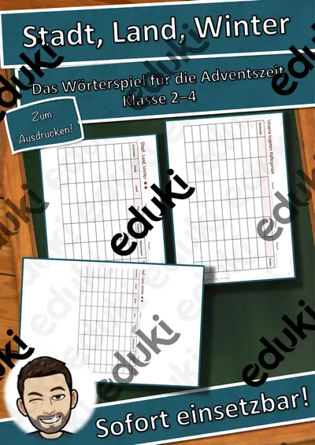

Adventsgeschichten - Grundschule - 24 Adventsgeschichten
Mit diesem Material erhalten Sie 24 unterschiedliche Adventsgeschichten, die Zielgruppe dabei sind Schüler der 3. - 5. Klasse. Ich wünsche Ihnen viel Freunde mit dem Material!
Dieses Material zielt darauf ab, die Kreativität und das Leseverständnis der Schüler*innen in der Adventszeit zu fördern.
Dieses Material enthält:24 Adventsgeschichten: Kurze, fantasievolle Erzählungen zur Adventszeit.
Arbeitsblätter: Aufgaben zur Vertiefung des Leseverständnisses.
Kreativaufträge: Anregungen für eigene Geschichten oder Bastelarbeiten.
Illustrationen: Liebevoll gestaltete Bilder, die die Geschichten ergänzen.
Vorschläge für Unterrichtsaktivitäten:1. Gruppendiskussion über die Adventsgeschichten
Gib den Schüler*innen eine Geschichte aus dem Material und lass sie in kleinen Gruppen über das Thema und die moralische Botschaft diskutieren. Ermutige sie, ihre Meinungen zu teilen und zu vergleichen.2. Puzzle-Aktivität mit dem Jigsaw-Verfahren
Teile die Klasse in Gruppen ein und gib jeder Gruppe einen Abschnitt einer Geschichte. Jede Gruppe liest und bespricht ihren Abschnitt und präsentiert dann der gesamten Klasse, um die vollständige Geschichte zusammenzusetzen.3. Geschichten mit persönlichem Bezug verknüpfen
Bitte die Schüler*innen, ihre eigenen Erfahrungen oder Erinnerungen aus der Adventszeit zu teilen, die thematisch zur Geschichte passen. Dies verbessert das persönliche Verständnis und die Wertschätzung der Geschichten.4. Kreatives Schreiben von Fortsetzungen
Ermutige die Schüler*innen, ihre eigene Fortsetzung einer der Geschichten zu schreiben. Dies kann einzeln oder in Paaren durchgeführt werden, um Kreativität und Schreibfertigkeiten zu fördern.5. Erstellen von mentalen Bildern
Lies eine Geschichte vor und lass die Schüler*innen zeichnen, was sie sich vorstellen, während sie zuhören. Dies hilft beim Aufbau von mentalen Bildern und verbessert das Verständnis des Textes.
Ähnliche Materialien

Kreativität – Hörverstehen mit Lückentext (interaktiv)

Kreativität Lückentext mit Wortspeicher Hörverstehen und Suchsel

Erzählung Lückentext mit Wortspeicher Hörverstehen und Suchsel

04-21 Welttag der Kreativität und Innovation

Stadt, Land, Winter: Das Wörterspiel für die Adventszeit, Klasse 2–4

Advents-Ideen Gesamtpaket: 11 Materialien für die Adventszeit, Klasse 1–4

Echte Freunde – Freundschaft, Clique und Gruppendruck – Lesespurgeschichte mit Rätselaufgaben (Klasse 6)